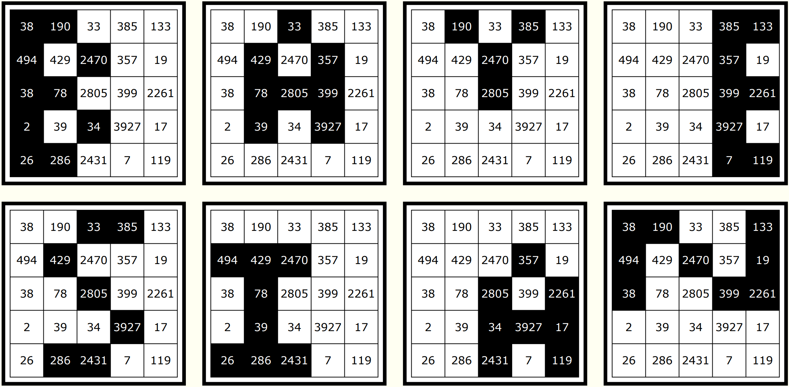

Solution: Decomposition
Answer: BAYESIAN
Written by Hadyn Tang (with inspiration from Norm Do and Ross Atkins)
Firstly, we should figure out what the letter B is doing in the stack of cards. We can notice that the letters that are shaded are exactly the even numbers. Similarly, on the second card, out of the visible shaded cells, we can observe that the letters that are shaded are exactly the multiples of three.
From this, we might be able to guess from this that the puzzle has something to do with factors, and in particular given the title of the puzzle, Decomposition, with the prime decomposition of each number, which contains only small primes for each number.
If we were to shade in the numbers divisible by each prime in order — 2, 3, 5, 7, 11, 13, 17, 19 — letters appear, spelling the answer, BAYESIAN.
Click to show all of the cards with shaded numbers visible
